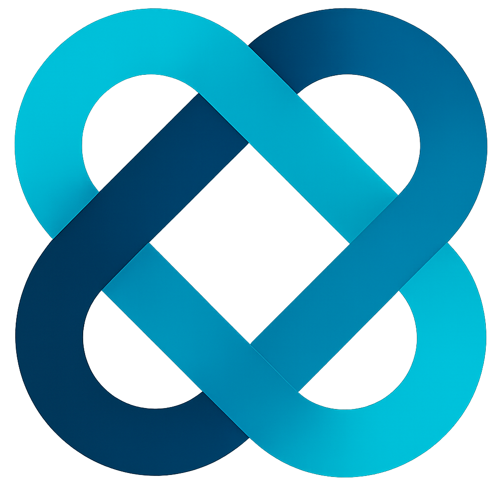

Deterministic L0–L8 governance for autonomous agents. Enforce the UAE AI Act Tier 4 at the execution boundary for Stargate‑class infrastructure.
> py scenarios\\g42\\run_g42_iran_scenario.py
------------------------------------------------------------
G42 DEMO: Iran Escalation – Autonomous Targeting Veto
------------------------------------------------------------
initializing Sovereign Trust Registry...
Registered UAE Government as SUPREME_AUTHORITY
Registered G42 as SOVEREIGN_INTEGRATED (Tier 4 constraints)
SCENARIO: Unauthorized Autonomous Targeting Request
Source: Foreign military actor (non-UAE)
Verdict: DENY
Reason: Unknown sovereign // UAE AI Act Tier 4 Violation
ACTION BLOCKED – Geopolitical neutrality preserved.
DEMO: UAE Sovereign Override (UNSC 2231 verified)...
Geopolitical Insurance Activated
Execution Token Gate (ETG) blocks unauthorized actions before LLM inference occurs. No bypass, no silent failures, no latency spike (<5ms overhead).
Immutable, cryptographically signed SARS receipts for every decision. Forensic proof of neutrality for regulators and partners.
Deployment‑ready for Khazna clusters. Zero data egress. All logs, rationale, and SARS evidence remain under UAE jurisdiction.
Restricted to @g42.ai, @openai.com, and @microsoft.com verified domains.